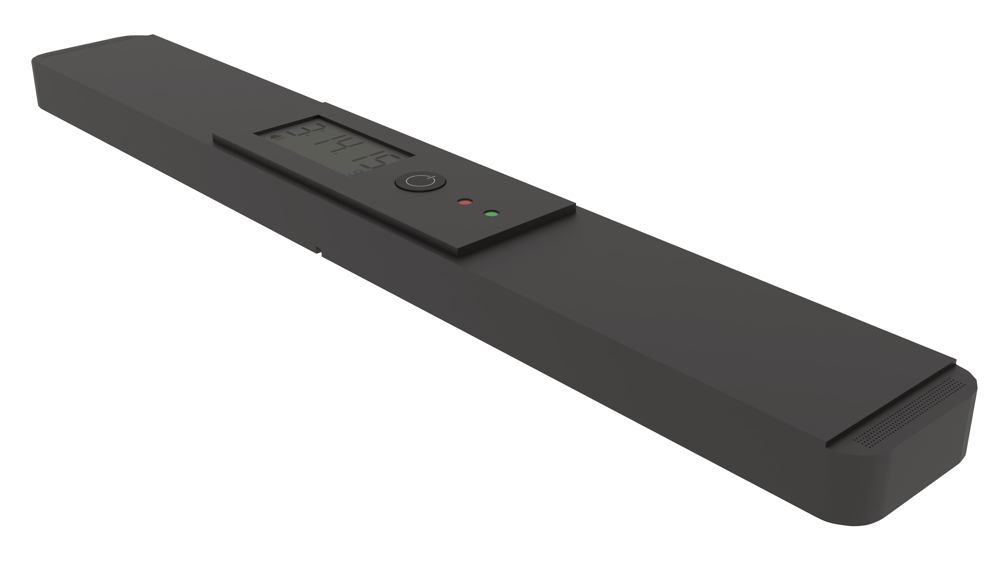
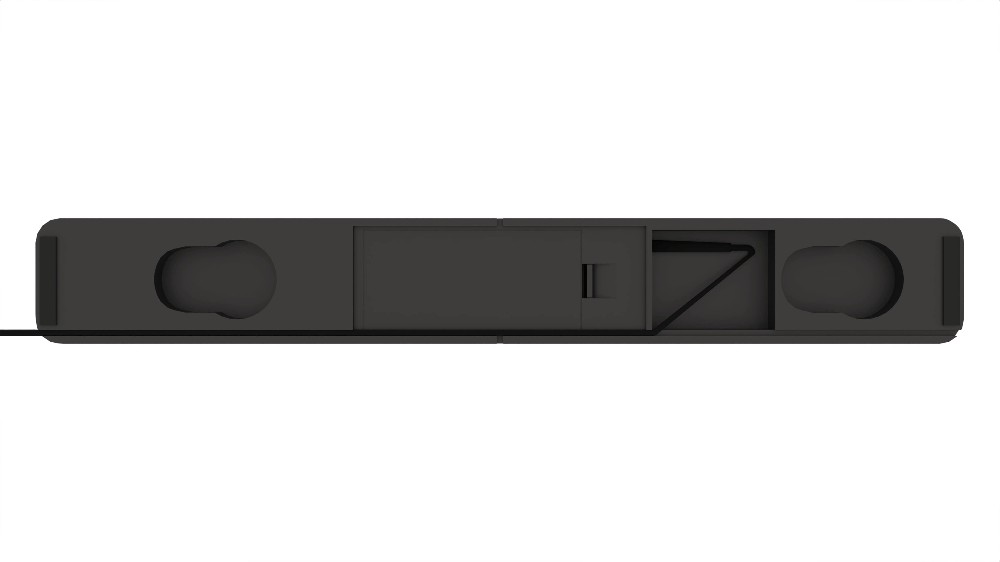
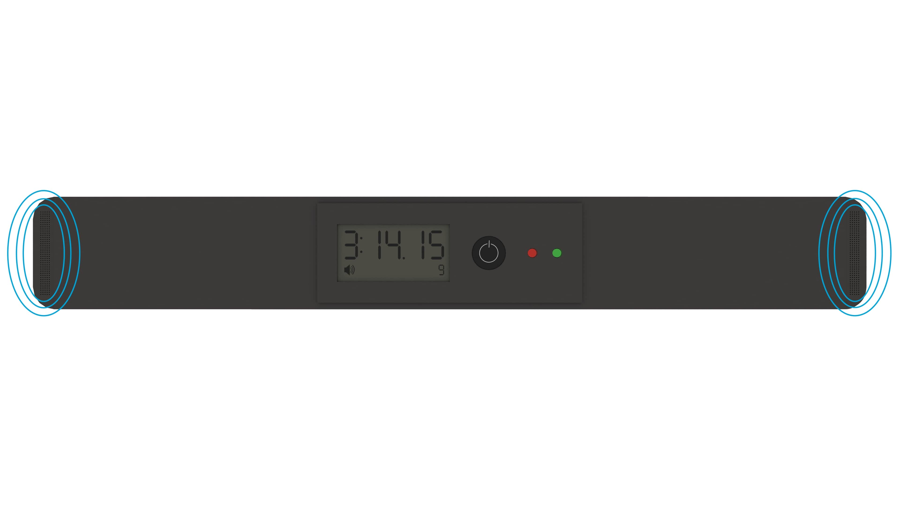

Speedsolving Timer Pro
Form meets function.
Speedsolving Timer Pro is designed from the ground up by speedsolvers, for speedsolvers. Dual Bluetooth and audio jack output enables connectivity for any device. An inspection mode simulates a judge at a real competition. And a vast array of quality-of-life features make it the most versatile and powerful timer ever.
Never not connect your timer again.
Speedsolving Timer Pro features a 3.5-millimeter port for connecting to tournament displays and traditional desktop PCs. Four openings on each side allow you to run your cable through whichever one is closest to your computer. However, many audio jacks on laptops and phones only work for output, requiring the purchase of a dongle. That's why Speedsolving Timer Pro is also equipped with Bluetooth. So whether you're at home or out and about, you can be confident that it will work with whatever device you're using.
No stopwatch necessary.
Speedsolving Timer Pro is designed just for cubers. Holding down the power button for five seconds toggles inspection mode, which is indicated by a sound volume icon. Placing your hands on the pads triggers a 15-second countdown and the pair of stereo speakers on each end call out 8 and 12 seconds. Holding the pads again starts the timer, which will automatically apply a +2 penalty or DNF if you've gone overtime. And the third decimal point is neatly tucked away off to the bottom right corner of the display, making writing down times ever so slightly easier for judges.
Never lose your cable again.
The battery compartment is easily accessible with no tools and features two AAA batteries and a space to store your cable.
Easy to store and transport.
The rectangular design facilitates storage in moving boxes and the raised interface locks right into the bottom inset to minimize jiggling.
Backwards compatible.
Speedsolving Timer Pro can be used with G3 and G4 mats as a drop-in upgrade. No mat? No problem. Two strips of rubber run along the outer edges to help keep the timer in place.
Where's the reset button?
Instead of making the reset button harder to activate, the timer simply auto-resets when you start another solve. This renders worrying about lost times a thing of the past without making drilling short algorithms needlessly painful!